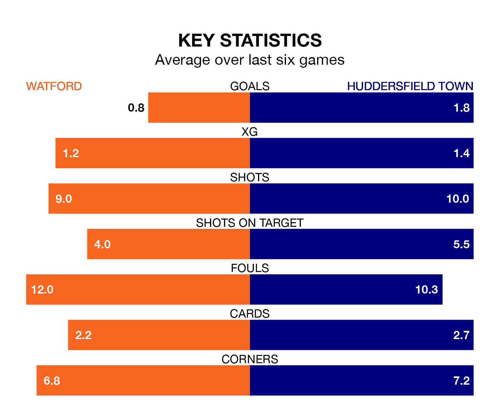

Huddersfield Town travel to Watford on Saturday in EFL Championship.
The visitors come into the game on the back of a defeat in their last match, having lost to Hull City 2-1 at home, with a goal from Jack Rudoni.
The Hornets, meanwhile, won their last match, 1-0 against Rotherham United, with their goal scored by Yaser Asprilla.
In the last 10 years, Watford and Huddersfield have played each other on 12 occasions. Watford won five of them, Huddersfield six, and they drew once.
On average, the Hornets scored 1.5 goals and the Terriers 1.7 in those matches.
Their last meeting was on November 4, when they played out a 0-0 draw.
With 38 goals in 33 games so far this season, Huddersfield are scoring at below the league average rate with 1.2 goals per game. And they are conceding more than average, letting in 54 goals at a rate of 1.6 per game.
Watford, meanwhile, are above average scorers, with 1.5 goals per game, compared to a league average of 1.4. They have conceded 1.4 goals per game.
Town are 20th in the table after 33 games, of which they have won seven and drawn 13, earning 34 points.
The Hornets are nine places ahead of the Terriers in 11th, with 11 wins and 11 draws putting them on 44 points.
The hosts are in disappointing form in EFL Championship, with one win and two draws from their last six games.
With two wins and two draws over that period, the away side's form is better – they have taken eight points from 18, compared to Watford's five.
Updated: 10:08 (UTC), 23/02/24